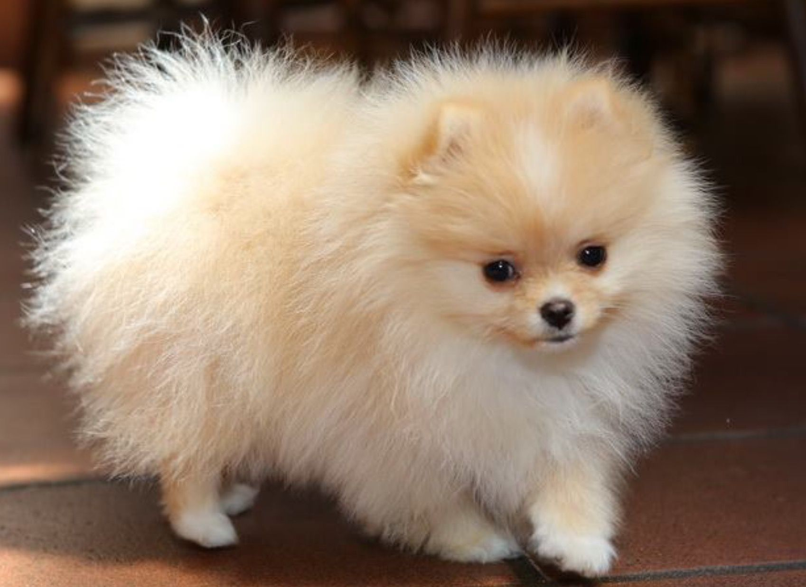
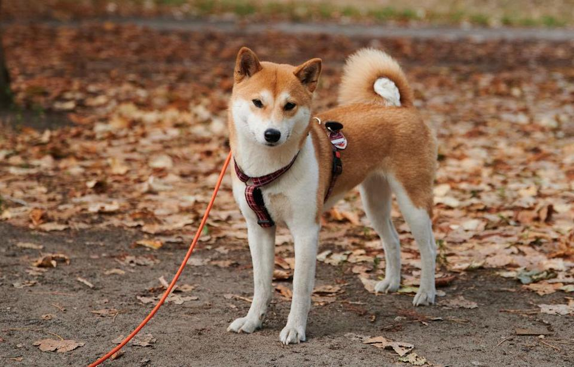

The Pembroke Welsh Corgi is a cattle herding dog breed that originated in Pembrokeshire, Wales. It is one of two breeds known as a Welsh Corgi. The other is the Cardigan Welsh Corgi, and both descend from the line of northern spitz-type dogs.
The Pembroke Welsh Corgi is a cattle herding dog breed that originated in Pembrokeshire, Wales. It is one of two breeds known as a Welsh Corgi. The other is the Cardigan Welsh Corgi, and both descend from the line of northern spitz-type dogs. The Pomeranian is a breed of dog of the Spitz type that is named for the Pomerania region in north-west Poland and north-east Germany in Central Europe. Classed as a toy dog breed because of its small size, the Pomeranian is descended from larger Spitz-type dogs, specifically the German Spitz.
 The Shiba Inu is a breed of hunting dog from Japan. A small-to-medium breed, it is the smallest of the six original and distinct spitz breeds of dog native to Japan. A small, alert, and agile dog that copes very well with mountainous terrain and hiking trails, the Shiba Inu was originally bred for hunting.
The Pembroke Welsh Corgi is a cattle herding dog breed that originated in Pembrokeshire, Wales. It is one of two breeds known as a Welsh Corgi. The other is the Cardigan Welsh Corgi, and both descend from the line of northern spitz-type dogs.